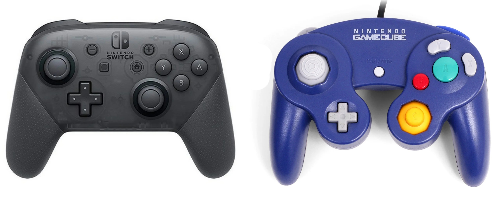
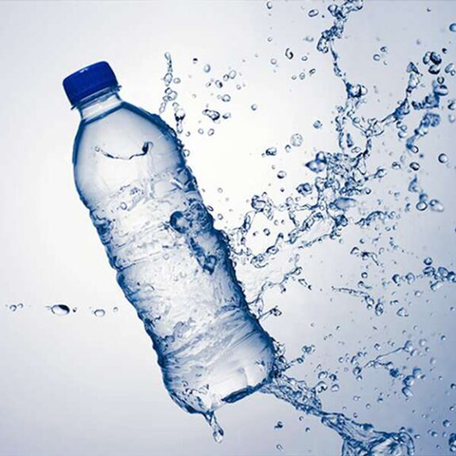
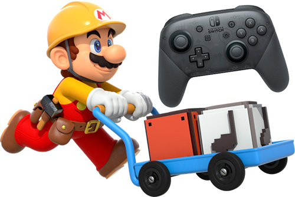
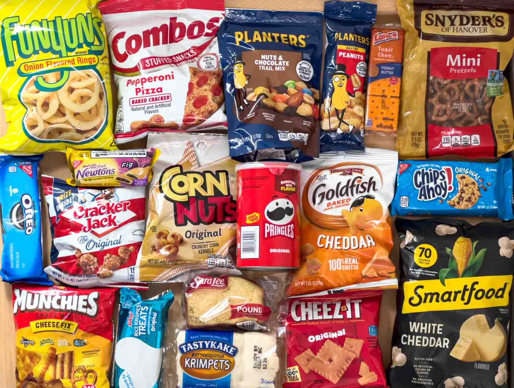
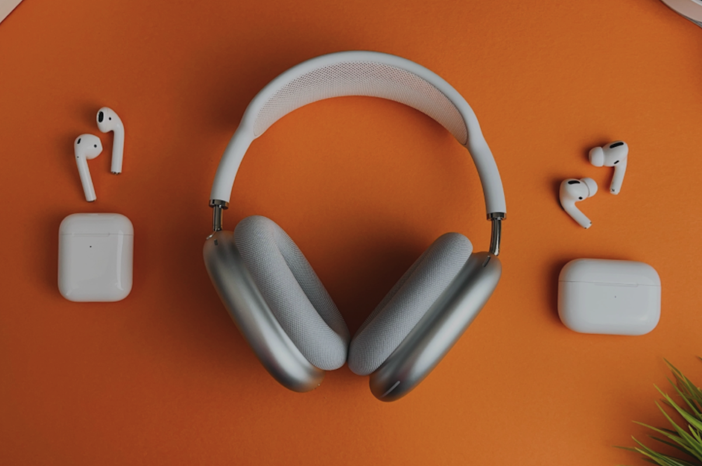
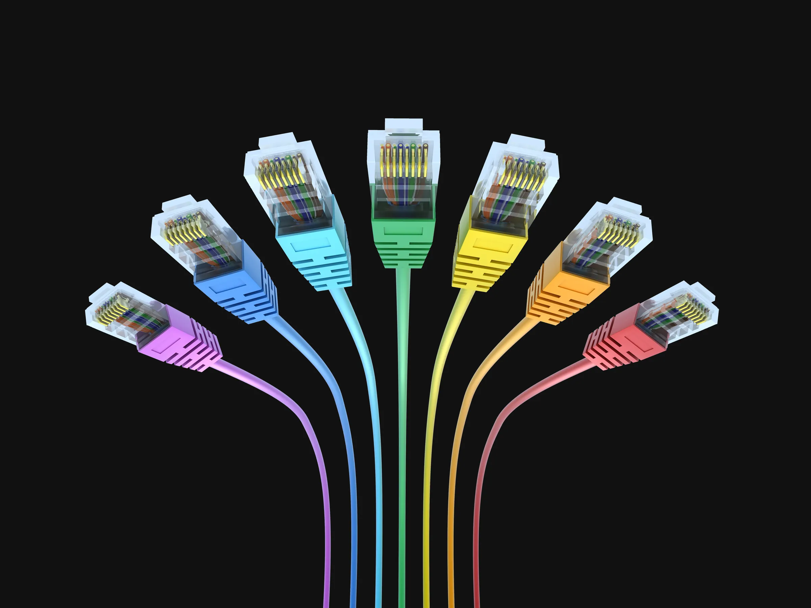
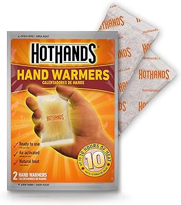
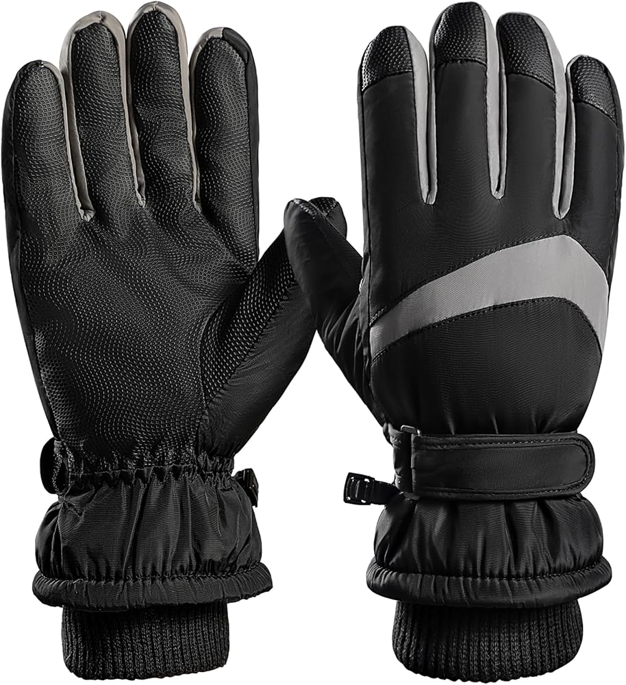

Home
What Is Smash Bros.?
My Smash Ultimate Mains
About King K. Rool
Matchup Charts: King K. Rool
About Sonic
Matchup Charts: Sonic
The Competitive Scene
Fun Facts About Smash Bros.
Super Smash Bros. has a standard criteria regarding equipment that you must meet in order to have a seamless tournament set. It is absolutely required to bring the following equipment to a tournament:
Bring your own controller, preferably official. GameCube Controllers and alternatively, Pro Controllers are really good for tournament play. Joy-Cons are tournament-legal but their quality is nowhere near as good, and they have more input lag too, especially in a full controller (dual Joy-Con) configuration. Also, avoid any third-party controllers that have turbo and macro features, as those will prohibit you from competition.
Bring a backup controller just in case your main controller unexpectedly fails.
While not absolutely required, here are some highly recommended pieces of equipment that you should bring to any tournament setting:
It is highly recommended that you bring your own headest and optionally, even earbuds too. You can hear the game better, cancel the noise of the crowd out for better concentration, and with a second audio device, you can put on your own music on top of the game audio.
Despite not being physical like a physical sport is, it is still necessary to fulfill your basic bodily needs. As such, it is important to fill up on water and snacks for better performance.
If online, you should also use ethernet when playing, as this makes the match a lot less laggy and more responsive. This is noticeable even with high end internet plans since Nintendo's servers kind of suck in terms of optimization. In some cases, such as the Coinbox tournament series, it is a requirement to use ethernet in order to compete.
Using hand warmers and / or gloves in between breaks can be very beneficial if the venue you are at is cold or has air conditioning on.
Overall, it is pretty easy to follow the requirements for equipment at Smash tournaments. I am speaking from my own personal experience playing Smash competitively, and it is pretty easy to prepare for this kind of stuff. Have fun competing!
 
 
 
 
Home
What Is Smash Bros.?
My Smash Ultimate Mains
About King K. Rool
Matchup Charts: King K. Rool
About Sonic
Matchup Charts: Sonic
The Competitive Scene
Fun Facts About Smash Bros.